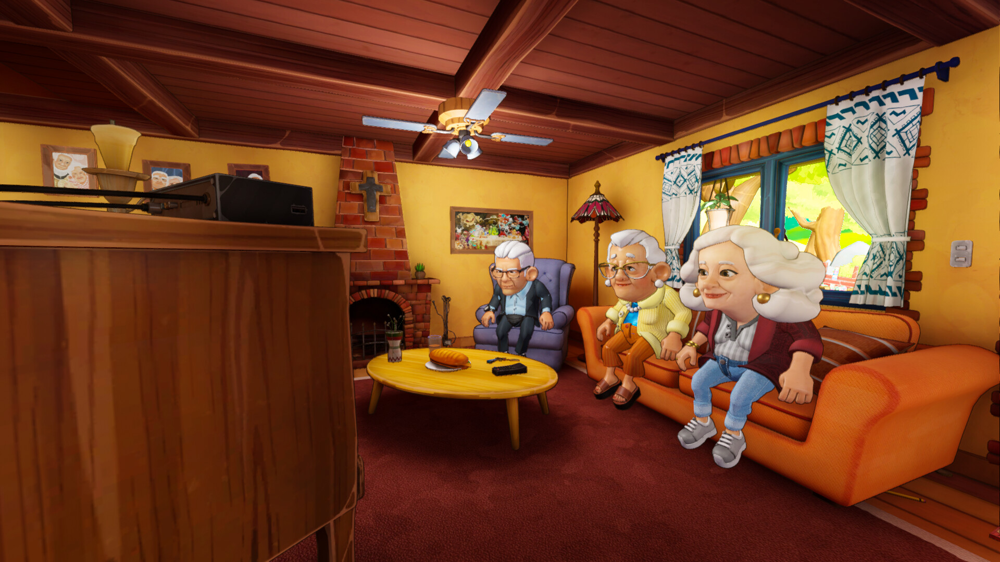
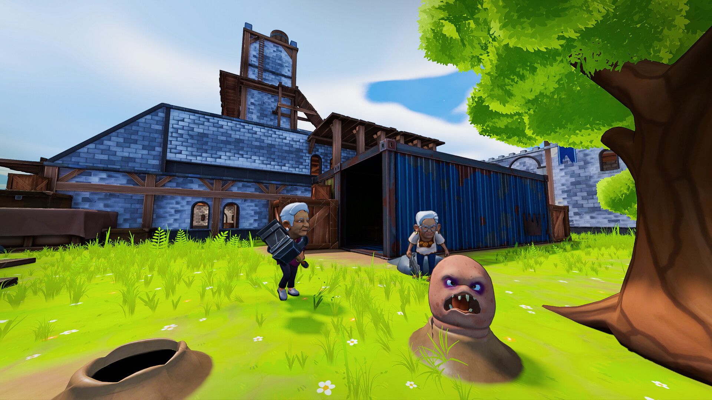
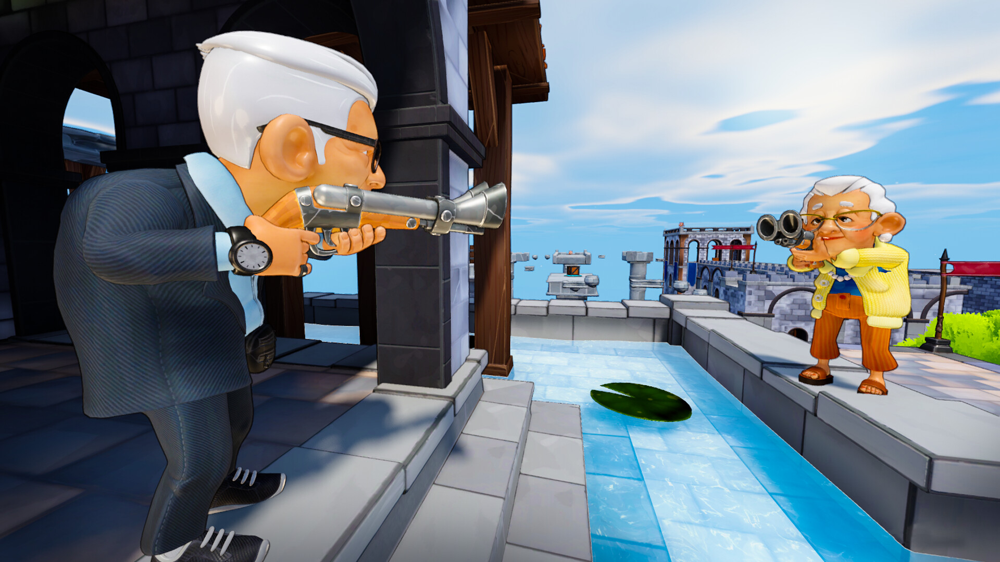

Elders KO is a chaotic multiplayer party game where elderly characters compete in fast-paced, physics-driven minigames. Developed by a 10-person team, it blends slapstick combat with unpredictable challenges, and I contributed to gameplay programming, system design, and core implementation in Godot.
Elders K.O. was a completely new experience for me, as it was the largest team I had worked with up to that point. Collaborating with such an interdisciplinary group pushed me to strengthen my organization and communication skills, and to adapt my workflow to a more structured, team-oriented development environment. This was also my first time contributing to a Godot project at this scale, where multiple modular systems were needed to maintain a stable, optimized, and fluid multiplayer experience. There were many challenges throughout development, but here are some of the key ones I faced:
Elders K.O. was my first experience developing a multiplayer game, which comes with challenges that simply don’t exist in single-player projects.
Elders K.O. is built around a collection of fast-paced minigames, each designed to keep matches energetic and varied through different types of challenges.
Minigames alone weren’t enough to keep Elders K.O. engaging throughout a full match. A large and diverse set of items added depth, unpredictability, and a unique layer of strategy to every round.

Lobby scene in Elders K.O.

Worm-whacking mini-game.
Elders K.O. required a scalable and modular architecture to support dozens of unique interactions, items, abilities, and minigame-specific behaviors. To achieve this, I helped develop a custom Entity–Component System (ECS), which allowed us to separate data from behavior and manage complex gameplay logic in a clean, extensible way. Since Godot does not natively provide an ECS framework, building our own was essential for keeping the project organized and maintainable as it grew in scope.
The core benefits that made an ECS the right choice for Elders K.O. included:
Building a custom ECS in Godot required careful planning and cross-team collaboration:

Elders aiming at each other
Bullseye mini-game.